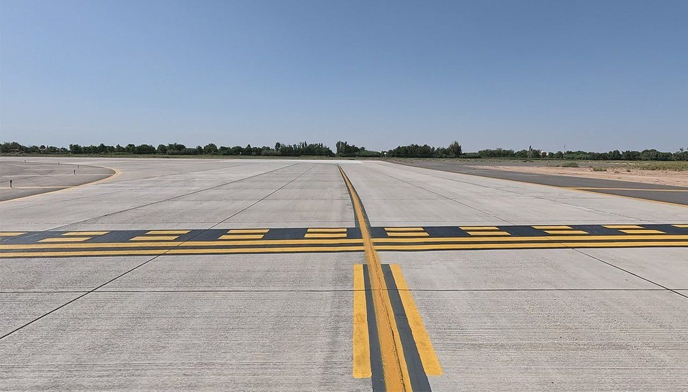
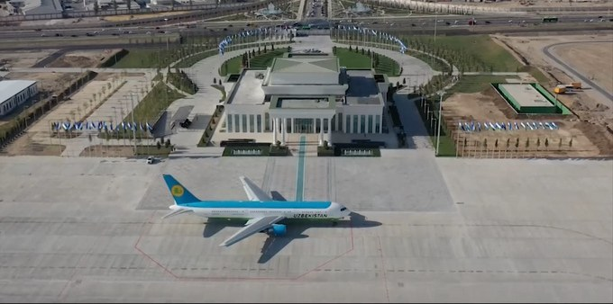
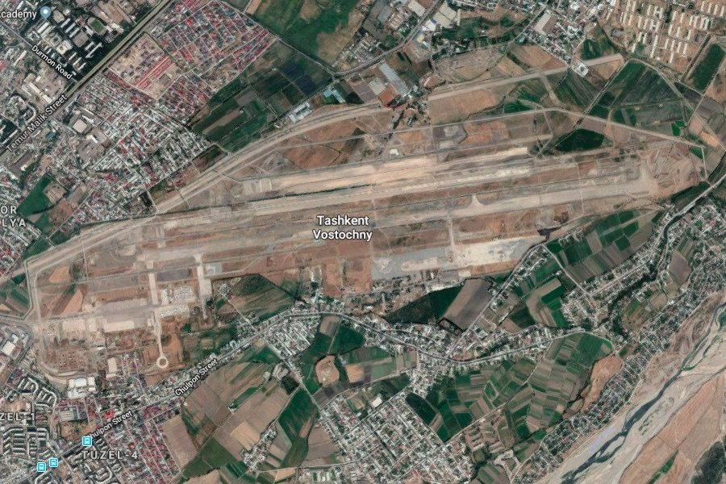

Аэродромы и дороги.Генеральный подряд и субподряд.
ООО «Terravia Constructions» строит автомобильные дороги, аэродромы, взлётно-посадочные полосы (ВПП), рулёжные дорожки, перроны и другие объекты транспортной инфраструктуры. Страна работы — Узбекистан.
8
объектов команды
5
из них — на аэродромах
2
аэропорта в работе сейчас
25км
трассы А-380, км 673–698
30
самосвалов Shacman в собственном парке
более
10лет
истории компании
Основная технология — цементобетонное покрытие в скользящих формах. Укладку ведёт собственный бетоноукладочный комплекс GOMACO, смесь готовит собственный бетонный завод EUROMIX. Для асфальтобетонных покрытий в парке есть асфальтоукладчик и каток.
Компании — более 10 лет. Дорожное и аэродромное направление в ней — новое. Команда, которая его ведёт, — нет: в её опыте восемь объектов, пять из них — на аэродромах.

Аэродромное цементобетонное покрытие: швы и разметка.
16:9
Фотография появится позже
Иллюстрация
Аэродромное цементобетонное покрытие: швы и разметка.
Формат работы
Генеральный подряд
Объект целиком — аэродром, взлётно-посадочная полоса, дорога.
В опыте команды — пять объектов генерального подряда: аэропорт Термез, Ташкент — ВПП № 1 и ВПП № 2, аэропорт Андижан, трасса А-380.
Субподряд
Отдельный комплекс работ на объекте генерального подрядчика — например, цементобетонное покрытие в скользящих формах собственным комплексом GOMACO.
В опыте команды — три объекта субподряда: аэродром «Ташкент-Восточный», дорога 4К785А с цементобетонным покрытием, административное здание.
Генеральным подрядчикам и консультантам: цементобетонное покрытие в скользящих формах — собственным комплексом, с собственным заводом и транспортом.
В названии — три слова
В названии компании читаются три слова. Вместе они описывают её работу: земля, которая становится путём, и путь, с которого начинается полёт.
TERRAземля
Грунт, основание, покрытие.То, что держит.
VIAпуть
Автомобильные дороги, рулёжные дорожки, взлётно-посадочные полосы.То, что ведёт.
Аэропортовый комплекс гражданской (деловой) авиации.
Субподряд
Состав работСвернуть
Строительство аэропортового комплекса гражданской (деловой) авиации.
Годы
Заказчик
Объём

Аэродром «Ташкент-Восточный». Вид с воздуха.
07
Дорога
Капитальный ремонт. Цементобетонное покрытие.
Субподряд
Состав работСвернуть
Капитальный ремонт дороги местного значения с цементобетонным покрытием — от автомобильной дороги А-373 до площадки цементного комбината.
Годы
Заказчик
Объём
Дорога 4К785А, км 0–5
08
Здание
Строительство.
Субподряд
Состав работСвернуть
Строительство административного здания.
Годы
Заказчик
Объём
Административное здание налогового управления Ташкентской области
II · VIAТехникаКак устроено покрытие и чем оно строится.
II·Технология
Поверхность
Разрез
Конструкция
Полосу видно сверху.Работает она вглубь.
Колесо самолёта касается только верхнего слоя. Нагрузку держит вся конструкция под ним. Посмотрите на взлётно-посадочную полосу в разрезе.
Листайте — полоса раскроется в разрезе
Пять слоёв.У каждого — своя работа.
Нагрузка приходит сверху и расходится вширь. Вода уходит вниз и в стороны. Грунт остаётся неподвижным.
Искусственное основание
Листайте дальше — слои вернутся на место
Вместе — одна конструкция.
Нагрузка идёт сверху вниз. Строят — снизу вверх. Состав и толщину слоёв задаёт проект. Каждый слой принимают отдельно: следующий укладывают только на готовый предыдущий.
Terra — под. Avia — над. Между ними — полоса.
Для каждого слоя — своя техника. Парк — собственный.
Принимает колесо самолёта, погоду и струи двигателей. Передаёт нагрузку ниже.
Жёсткое · цементобетонПлита работает как жёсткая пластина и сама распределяет нагрузку по основанию. Швы нарезают в затвердевшем бетоне, чтобы плита не трескалась произвольно.Цементовозы → бетонный завод EUROMIX → собственный автотранспорт → бетоноукладчик GOMACO GP-4000 → машина GOMACO для текстурирования и ухода → нарезчики швов
Фильм без звука: взлётно-посадочная полоса в разрезе. Слои поднимаются, показывают материалы и возвращаются на место.
Принципиальная схема. Не в масштабе; состав и толщина слоёв определяются проектом.
В кадре — асфальтобетон. Там, где проект требует жёсткого покрытия — на взлётно-посадочных полосах, рулёжных дорожках, перронах, — его место занимает цементобетонная плита. Её укладываем в скользящих формах собственным комплексом GOMACO.
Собственная техника.От бетонного завода до нарезки швов.
Каждый слой строит своя машина. Парк показан в порядке слоёв: покрытие, основание и грунт, транспорт.
Бетоноукладочный комплекс GOMACO в работе
Покрытие · цементобетон
Бетонная линия
Цемент, смесь, доставка, укладка, уход, швы — вся цепочка цементобетонного покрытия на собственной технике.
1Цемент01
2Смесь02
3ДоставкаСмесь идёт к укладчику на собственном автотранспорте. Транспорт
4Укладка03
5Текстура и уход04
6Швы05 · 06
01/ 144:3
Фотография появится позже
01 / 14Цемент
Цементовозы
2ед.
Перевозка цемента навалом
Доставляют цемент навалом в герметичной цистерне и пневматически перегружают его в силосы бетонного завода.
02/ 144:3
Фотография появится позже
02 / 14Смесь
Бетонный завод EUROMIX
Бетоносмесительная установка
Готовит бетонную смесь: дозирует цемент, щебень, песок, воду и добавки по рецептуре и выдаёт смесь в темпе, которого требует укладчик.
03/ 144:3
Фотография появится позже
03 / 14Укладка
Бетоноукладчик GOMACO GP-4000
Укладка в скользящих формах
Укладывает цементобетонное покрытие в скользящих формах: за один проход распределяет смесь, уплотняет её глубинными вибраторами и формует плиту проектной ширины и толщины — без стационарной опалубки.
04/ 144:3
Фотография появится позже
04 / 14Текстура и уход
GOMACO · текстурирование и уход за бетоном
Следом за укладчиком
Идёт следом за укладчиком: наносит на свежий бетон текстуру, которая даёт сцепление колёс с покрытием, и распыляет плёнкообразующий состав, защищающий бетон от пересыхания.
05/ 144:3
Фотография появится позже
05 / 14Швы
Нарезчик швовSF6022
Нарезка швов в бетоне
Нарезает швы в затвердевшем цементобетоне. Шов задаёт линию, по которой плита работает при перепадах температуры, — без произвольных трещин.
06/ 144:3
Фотография появится позже
06 / 14Швы
Нарезчик швовSF3002
Нарезка швов в бетоне
Швы нарезают в короткое технологическое окно после укладки — до появления усадочных трещин.
Покрытие · асфальтобетон
Асфальтобетон
Асфальтобетонные слои и покрытия — укладчик и каток в собственном парке.
07/ 144:3
Фотография появится позже
07 / 14
Асфальтоукладчик
Укладка асфальтобетона
Распределяет асфальтобетонную смесь слоем заданной ширины, толщины и уклона и предварительно уплотняет её плитой.
08/ 144:3
Фотография появится позже
08 / 14
Дорожный каток
Уплотнение
Уплотняет уложенные слои до проектной плотности.
Основание и грунт
Земляные работы и основание
Покрытие служит столько, сколько держит основание. Выемка, профиль, уплотнение — до первого куба бетона.
09/ 144:3
Фотография появится позже
09 / 14
Экскаватор
Разработка грунта
Разрабатывает грунт: корыто под основание, котлованы и траншеи под водоотвод и инженерные сети. Грузит грунт в самосвалы.
10/ 144:3
Фотография появится позже
10 / 14
Автогрейдер
Профилирование
Профилирует грунтовое основание и слои основания под проектные отметки и уклоны. Ровность покрытия начинается с ровности основания.
11/ 144:3
Фотография появится позже
11 / 14
Фронтальный погрузчик Doosan
Погрузка и подача материалов
Подаёт щебень и песок в бункеры бетонного завода, грузит самосвалы, работает на складе инертных материалов.
Все слои
Транспорт
Материалы на объект возит собственный транспорт.
12/ 144:3
Фотография появится позже
12 / 14
Самосвалы Shacman
30ед.
Перевозка грунта и инертных материалов
Перевозят грунт, щебень и песок — между карьером, складом и участком работ.
13/ 144:3
Фотография появится позже
13 / 14
HOWO Sinotruk
9ед.
Грузовая техника
Грузовая техника для перевозки материалов и снабжения объекта.
14/ 144:3
Фотография появится позже
14 / 14
Седельные тягачи
7ед.
Буксировка полуприцепов
Буксируют полуприцепы с цементом, материалами и техникой.
Собственный парк техники
III · AVIAСейчасЧто в работе сегодня. И как начать разговор.
III·Сейчас
Сейчас в работе — два аэропорта.
Ташкент-Восточный и Бухара.Оба объекта — аэродромные.

Аэродром «Ташкент-Восточный».Спутниковый снимок.Ташкент-Восточный. Ход работ.
В работе
Ташкент-Восточный
Аэропортовый комплекс гражданской (деловой) авиации на базе аэродрома.
Международный аэропорт «Бухара».Ход работ.
16:9
Фотография появится позже
Международный аэропорт «Бухара».Ход работ.
В работе
Международный аэропорт «Бухара»
Взлётно-посадочная полоса (ВПП), рулёжные дорожки и перрон.